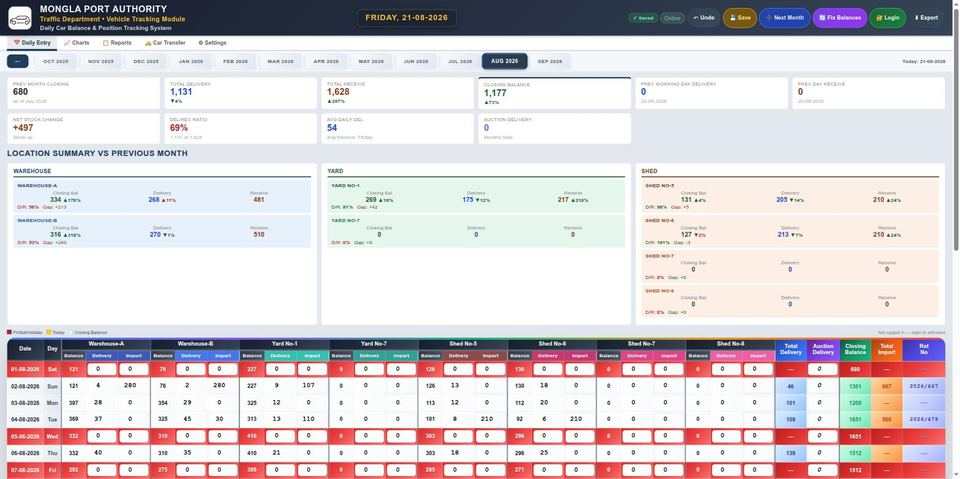
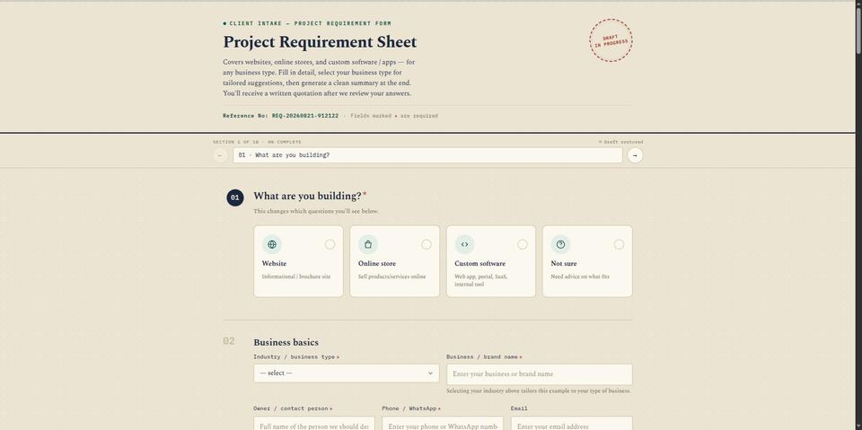
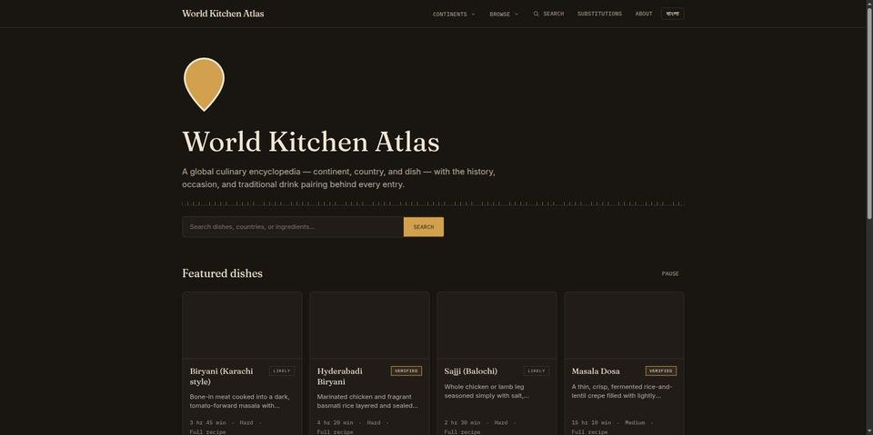

MD Samiul Alam Sumel
AI Product Engineer
Port & Logistics Domain·React, Next.js, Node.js & MongoDB
I find a real operational problem, design the system, build it with AI-assisted development, then rebuild it independently from memory until I own every line. 12+ years inside Mongla Port Authority gives me problems no outside developer would even see. 3 self-built tools — billing, vehicle tracking, payroll automation — are in daily production use there.
01 / Who I Am
About Me
I am an AI Product Engineer — I find a real operational problem, design the system around it, build with AI-assisted development, then rebuild the important parts independently until I own every line. Not a generalist developer, not a pure ops person: the rare combination of domain judgment and engineering execution.
I bring 12+ years of professional work experience as a Senior Outdoor Assistant at Mongla Port Authority — Bangladesh's second-largest international seaport — in wharfrent billing, cargo dwell time management, terminal operations, and C&F agent coordination.
I used that operational background to identify real workplace problems and built 3 self-initiated web applications — plain JavaScript/HTML/CSS at the time — that are still used daily by C&F agents and port staff. That is real, in-production software, not a class exercise. Alongside that operational work, I worked through a large part of an intensive, project-based full-stack curriculum — HTML, CSS, JavaScript (ES6+), React, React Router, part of Node.js/Express and Next.js, including authentication (JWT, Firebase) and deployment — before stepping away from the course to focus on shipping real projects.
I work requirement-first: I read the operational problem — which I can judge from 12 years inside port operations — decide what the system actually needs to do, then build and ship it, using AI-assisted development (Claude Code) as part of the build. On frontend and plain-JavaScript work I write and debug on my own; on backend and data work, AI assistance is genuinely part of how I get from requirement to working code. The How I Build section explains the discipline I use to close that gap, and the Roadmap shows where I actually am on it right now.
I'm not a bootcamp graduate and not a senior engineer — I am upfront about that. What I bring is 12+ years of professional discipline from a demanding operational job, a large chunk of self-directed full-stack study, and real shipped software.
My goal is a remote AI Product Engineer, Port/Logistics-Tech, full-stack, or web developer role — anywhere in the world, with no time zone constraints.
02 / How I Work
How I Build
Every project on this site was built with AI assistance. That's a plain fact, not a confession — Claude and similar tools are part of how I get from a requirement to working code. But using a tool isn't a skill. The skill is the workflow around it, and the discipline of actually owning what comes out of it.
Using Claude to write code is tool use, not a skill in itself. The real skill is the workflow: understand the requirement, research it, design the solution, specify it clearly, then build — with AI assistance where that's honest, on my own where I can.
A new piece gets built once with AI assistance to see the shape of it. Then I rebuild it from memory, no AI, on a timer, typing it myself. Then I explain it out loud as if teaching a junior developer. Until all three are done, I don't count it as learned.
"Build me a billing app" gets a weak result from any model. Business rules, the real data model, edge cases, and acceptance criteria stated up front get an accurate one — I treat specifying that context as its own deliberate skill, not an afterthought.
- Local dev environment and a real terminal, not a browser sandbox
- A meaningful git commit for every rebuilt piece
- No copy-paste during a rebuild — typed from memory, every time
- Timed practice, logged, so improvement is measurable over time
- CLI-first — git, npm, and deploy tooling by hand, not GUI shortcuts
- Every README splits what's AI-assisted from what's independently rebuilt
03 / Problem → Product
Featured Projects

Port Billing Calculator May 2026

Daily Car Balance & Location Tracking System ("carview")

OT Bill Management System May 2026

Client Intake Form

World Kitchen Atlas
JARVIS Source Available — No Live Demo
04 / Technical Stack
Core Competencies
Grouped by how I actually work with each: what I write and debug on my own, and what I build using AI-assisted development. Everything listed is either something I worked through in self-directed study or used in a public repo.
Domain & Port Operations
Frontend & JavaScript
React & Next.js
Backend, Data & Deployment
Course-covered and used in real projects; on backend and data work I lean on AI-assisted development to get from requirement to working implementation — the Roadmap section below is how I'm closing that gap.
Linux & Automation (self-directed)
05 / Closing the Gap
Engineering Roadmap
A self-authored, phase-based plan for turning "built with AI assistance" into "built independently, AI or not." Each phase rebuilds a real piece of the shipped projects above from memory, with a concrete milestone before moving on.
- JavaScript/TypeScript, atomic breakdown
- DSA basics
- Git CLI workflow
Milestone: rebuild core JS/TS syntax from memory, no AI, timed.
- Rebuild PortBill/OTBill backends independently
- JWT + bcrypt by hand
- REST API design
- PostgreSQL schema & migrations
- Testing (Jest/Vitest)
Milestone: a REST API from scratch, explained with no notes.
- AWS — IAM, EC2, S3, Lambda, RDS
- Dockerfile & docker-compose
- GitHub Actions pipeline
Milestone: a project deployed to AWS with a passing CI pipeline.
- LLM API integration, in depth
- RAG — chunking, embeddings, vector DBs
- Agent orchestration
- Evaluation & guardrails
Milestone: JARVIS architecture explained end-to-end, plus a new feature added independently.
- Per-project READMEs: AI-assisted vs. self-written
- Clean, meaningful commit history
Milestone: every project explainable from memory in 5 minutes.
- Weekly mock technical interviews
- Small-scale system design practice
- Take-home assignment simulation
Milestone: a polished CV, LinkedIn, and a working interview rhythm.
06 / Where the Problems Come From
Port Operations Background
Every project above started as a problem I saw first-hand doing this job — not a spec handed to me. That's the part an outside developer can't shortcut.
Senior Outdoor Assistant — Port Operations & IT Systems
Nov 2017 – Present- Manage end-to-end wharfrent billing cycle — slab-wise charge computation, VAT and levy calculation, inside/outside cargo split, and final billing issuance for active C&F agents — identified the recurring manual-calculation bottleneck in this cycle and independently built and deployed portbill, now used daily by the billing desk to verify charges in advance
- Provide advance billing estimates to C&F agents, enabling accurate payment planning, reducing vehicle dwell time, and eliminating unnecessary counter visits
- Track cargo and vehicle positions simultaneously across warehouse, shed, and yard terminal locations in real time — the single-person, Excel-only version of this record was the direct trigger for building carview, now the Traffic Department's shared, version-controlled tracking system
- Maintain daily and monthly revenue reports, cumulative income statements, and vehicle balance records for port authority management
- Generate car import/delivery and jetty statistics reports used for operational planning and port authority audits
- Operate port automation billing system — manage full wharfrent computation workflow from vessel arrival through final billing issuance
- Coordinate C&F agent documentation, billing queries, and advance payment planning across the terminal
- Independently identified critical inefficiencies in manual paper-based billing, overtime payroll calculation, and vehicle tracking workflows — designed and deployed 3 live web applications (billing, payroll automation, vehicle tracking) now used daily by C&F agents and port staff at Mongla Port
- Built with plain JavaScript/HTML/CSS and deployed using AI-assisted development as a productivity tool, while working through a structured full-stack curriculum in parallel
- Worked through a large part of a structured full-stack curriculum (HTML/CSS, JavaScript, React, part of Node.js/Express and Next.js) alongside a full-time port operations career, before stepping away from it to focus on shipping real projects
- Maintain an active public GitHub portfolio (github.com/samiulAsumel) demonstrating continuous technical growth
Junior Outdoor Assistant — Port & Terminal Operations
Nov 2013 – Nov 2017- Assisted in port inspections, vessel operations, and cargo handling under senior supervision
- Monitored cargo dwell time and vehicle positioning across all terminal locations
- Maintained inspection reports, cargo handling records, and operational incident logs
- Coordinated with C&F agents for efficient cargo clearance and documentation workflows
- Built foundational expertise in wharfrent billing, maritime logistics, and customs clearance that underpins all later self-initiated digital work
07 / Freelance & Contract Work
Services I Deliver
Send the workflow and the problem — I identify what's actually going wrong, design the solution, and build and deploy it using modern full-stack tools and AI-assisted development. The categories below have a proven, verifiable track record; other problem types are evaluated the same way.
Full-Stack Web Apps
React/Next.js on the frontend, Node.js/Express + MongoDB on the backend — REST APIs, JWT/Firebase authentication, and Stripe payments when the job needs them.
✓ 3 apps in daily production use (vanilla JS + Cloudflare Workers); React / Next.js from World Kitchen Atlas, Node/ MongoDB backend work via AI-assisted development
Billing & Tracking Dashboards
Custom billing calculators, tracking dashboards, and operational tools — the same kind of tool I built to solve real problems at my own workplace.
✓ Built for real daily use, not a demo
Port & Logistics Workflow Digitisation
Turning paper-based or Excel-based port and logistics workflows — wharfrent billing, overtime payroll, cargo/vehicle tracking — into deployed, team-wide web tools, backed by first-hand operational knowledge of how those workflows actually run.
✓ Proven with 3 tools converted from manual/Excel processes
08 / Self-Directed Practice
Linux & Automation Practice
Bash Automation & Linux Practice
Self-directed practice building production-style Bash automation for deployment, SSL certificate renewal, and log/security monitoring — daily Linux (Ubuntu) user, scripting and administering my own systems outside of any certification track.
Self-driven learning, not job-critical production work — listed for transparency only.
09 / Active Growth
Active Growth
The Odin Project & Full Stack Open
Self-paced study for code comprehension, not a second certificate. Starting from The Odin Project's "Intermediate HTML and CSS" course inside its Full Stack JavaScript path, then continuing into Full Stack Open (University of Helsinki) — JavaScript fundamentals, Node.js/Express in depth, testing, and Git workflow, built by writing projects from an assignment brief rather than following a course guide.
In progress — listed here for transparency, not counted as a current qualification.
Personal AI Product Engineering Curriculum — Self-Authored
A self-authored, multi-phase curriculum I designed to pair AI product strategy with hands-on engineering — covering AI fundamentals, context engineering, product discovery and specification, full-stack AI product development, and deployment. Follows the Build → Rebuild → Explain discipline described in the How I Build section above. See the Roadmap for the current phase and progress.
Self-directed and ongoing — not a certification or completed course, listed for transparency.
10 / Background
Education
11 / Let's Connect
Get In Touch
I'm actively seeking a remote AI Product Engineer, Port Operations Technologist, Logistics Systems Engineer, or Full-Stack Developer role — and open to freelance and contract work — with organizations anywhere in the world. No time zone constraints; available to work and communicate on any schedule.
With 12+ years of professional port operations experience and self-directed full-stack study, I bring a combination few candidates can offer — domain judgment and engineering execution, proven by 3 self-built tools in daily production use, not just studied.